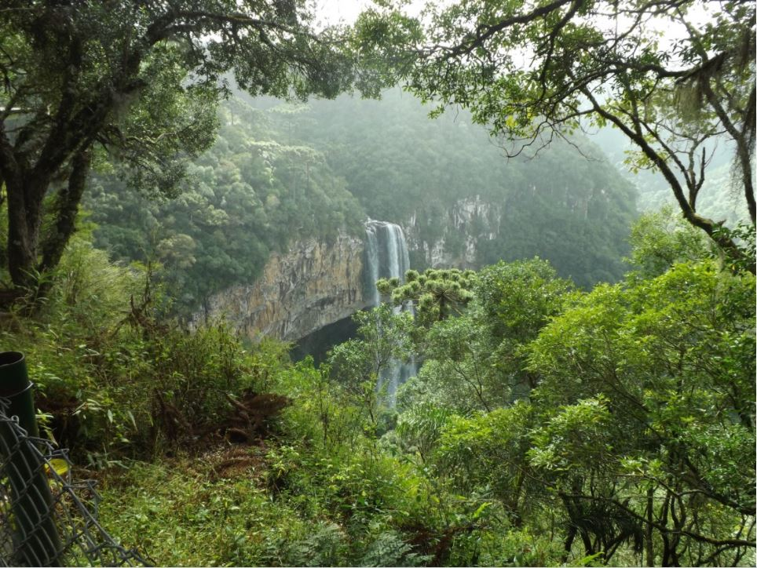

A Mata Atlântica é um bioma composto por um conjunto de florestas e ecossistemas que corresponde a 15% do território brasileiro.Desde 1500, essa área vem sofrendo com o desmatamento, as queimadas e a degradação do ambiente.É por isso que, atualmente, a vegetação corresponde a apenas 7% da mata original, com árvores de médio e grande porte, constituindo uma floresta densa e fechada.
Considerado um dos mais ricos biomas do planeta, ou seja, com maior biodiversidade, a Mata Atlântica é a segunda maior floresta em extensão do Brasil, constituída de planaltos e serras. Sua área abrange a costa leste, sudeste e sul do Brasil e, além disso, uma parte do Paraguai e da Argentina. Dentre os estados brasileiros, ela está presente em 17 deles: Alagoas, Bahia, Ceará, Goiás, Mato Grosso do Sul, Minas Gerais, Paraíba, Paraná, Pernambuco, Piauí, Sergipe, Rio Grande do Norte, Rio Grande do Sul, São Paulo, Espírito Santo, Rio de Janeiro e Santa Catarina.
Segundo dados do Ministério do Meio Ambiente, na Mata Atlântica existem aproximadamente 20.000 espécies vegetais correspondentes a mais de 35% das espécies existentes no Brasil.Estudos apontam uma grande diversidade de árvores por hectare, maior do que a encontrada na Amazônia peruana. Isso pode representar a maior diversidade de árvores por unidade de área do mundo!
Encontram-se bromélias, begônias, orquídeas, ipê, palmeiras, quaresmeira, pau-brasil, cipós, briófitas, jacarandá, peroba, jambo, jequitibá-rosa, imbaúba, cedro, tapiriria, andira, ananás e figueiras.Segundo as pesquisas atuais, 200 espécies vegetais brasileiras estão ameaçadas de extinção sendo que 117 pertencem a esse bioma.
Da mesma maneira, a fauna é muito rica. Segundo estudos realizados, a Mata Atlântica abriga 849 espécies de aves, 370 espécies de anfíbios, 200 espécies de répteis, 270 de mamíferos e cerca de 350 espécies de peixes.Muito desses animais correm o risco de extinção: mico-leão-dourado, bugio, tamanduá-bandeira, veado, gambá, cutia, tatu-canastra, mono-carvoeiro, arara-azul-pequena, lontra, quati, anta, onça-pintada, jaguatirica, capivara, etc.

O clima da Mata Atlântica é predominantemente tropical úmido, influenciado pelas massas de ar úmidas vindas do Oceano Atlântico.Apresenta também outros microclimas ao longo da mata, uma vez que as grandes árvores que compõem a vegetação geram sombra e umidade. Além do clima tropical litorâneo úmido, presente na região nordestina, a Mata atlântica engloba também os climas tropical de altitude, na região sudeste, e o subtropical úmido, na região sul. Suas temperaturas médias e umidade do ar são elevadas durante o ano todo e as chuvas são regulares e bem distribuídas.
